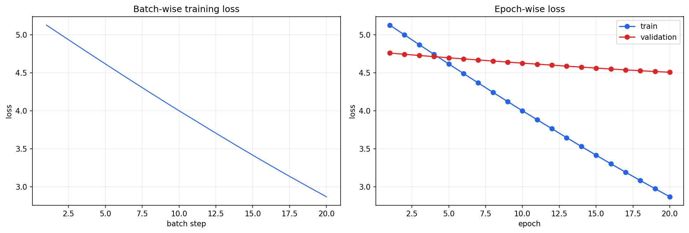
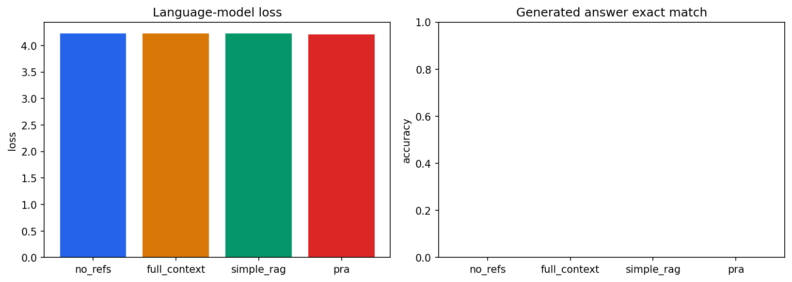

standalone_stage1_hierarchical_synthetic on stage1_hierarchical_synthetic
Generated 2026-08-07T18:49:40.601277+01:00 · 37,312 parameters · checkpoint D:\git\rd\pdattention\out\notebook_datasets\stage1_hierarchical_synthetic_size_3\checkpoints\latest.pt
Results
| Dataset Stage | stage1_hierarchical_synthetic |
|---|---|
| Size | 3 |
| Parameters | 37312 |
| Epochs | 20 |
| Optimizer Steps | 20 |
| Batch Steps | 20 |
| Train Loss | 2.87021 |
| Validation Loss | 4.50695 |
| Test Loss | 4.2106 |
| Test Perplexity | 67.397 |
| Test Token Accuracy | None |
| Test Answer Accuracy | 0 |
| Test Reference Accuracy | 0 |
| Test Reference Top1 Accuracy | 0 |
| Test Reference Topk Accuracy | 0 |
| Test Reference Mrr | 0 |
| Wall Clock Seconds | 2.80336 |
| Train Duration Seconds | 0.735883 |
| Validation Duration Seconds | 0.486173 |
| Test Duration Seconds | 0.0295794 |
| Processed Tokens | 840 |
| Sequences Seen | 20 |
| Optimizer Steps Per Second | 27.1782 |
| Training Tokens Per Second | 1141.49 |
Runtime
| Repo | D:\git\rd\pdattention |
|---|---|
| Seed | 7 |
| Device | cuda |
| Write Images To Disk | False |
| Python | 3.10.11 |
| Torch Version | 2.12.1+cu126 |
| Torch Cuda | 12.6 |
| Cuda Available | True |
| Gpu | NVIDIA GeForce GTX 950M |
| Compute Capability | (5, 0) |
Training Progress

Evaluation

| Name | Lm Loss | Answer Exact Match | Expected Ref Hit | Cache Hit Ratio | Latency |
|---|---|---|---|---|---|
| no_refs | 4.22899 | 0 | 0 | 0 | 0.0497481 |
| full_context | 4.22899 | 0 | 0 | 0 | 0.0718937 |
| simple_rag | 4.22899 | 0 | 0 | 0 | 0.0561322 |
| pra | 4.2106 | 0 | 1 | 1 | 0.124493 |
Dataset
| Stage | stage1_hierarchical_synthetic |
|---|---|
| Dataset Name | hierarchical_reference |
| Size | 3 |
| Sample Id | q1_1 |
| Question | What is the JWT expiration? <REF_1> <REF_2> |
| Answer | 37 minutes |
| Target Reference Ids | [1] |
| Reference Tokens | ['<REF_1>', '<REF_2>', '<REF_3>'] |
| Reference Uris | ['memory://project/phoenix', 'memory://project/orion', 'memory://project/nova'] |
| Train Size | 1 |
| Validation Size | 1 |
| Test Size | 1 |
| Vocab Size | 104 |
| Batch Shape | (1, 42) |
Policy
| D Model | 32 |
|---|---|
| N Layers | 2 |
| N Heads | 4 |
| Batch Size | 2 |
| Epochs | 20 |
| Learning Rate | 0.001 |
| Max Seq Len | 96 |
| Estimated Optimizer Steps | 20 |
Model Configuration
| Name | standalone_stage1_hierarchical_synthetic |
|---|---|
| Parameter Count | 37312 |
| Vocab Size | 104 |
| D Model | 32 |
| N Heads | 4 |
| N Layers | 2 |
| N Vanilla Layers | 0 |
| N Mixed Layers | 0 |
| D Ff | 128 |
| Max Seq Len | 96 |
| Dropout | 0 |
| Model Variant | custom |
| Pra Layer Ids | (0, 1) |
| Top K References | 2 |
| Top K Chunks Per Reference | 1 |
| Top K Refs | None |
| Trigger Threshold | 0.2 |
| Use Cross Attention Memory | True |
| Use Concat Memory | False |
| Memory Alpha | 0.5 |
| Search Strategy | hierarchical |
| Reference Score Aggregation | max |
| Reference Level Gist Mode | None |
| Gist Mode | mean |
| Max Gists Per Reference | 4 |
| Gist Overflow Policy | truncate |
| Gist Gru Hidden Size | None |
| Gist Gru Num Layers | 1 |
| Gist Gru Bidirectional | False |
| Ref End Token | <REF_END> |
| Chunking Mode | none |
| Fixed Chunk Tokens | 64 |
| Fixed Chunk Overlap Tokens | 0 |
| Reference Overflow Policy | truncate |
| Marker Rules | ('<PRA_CHUNK>',) |
| Semantic Chunker | None |
| Detail Materialization | selected_chunks |
| Memory Bucket Count | 1 |
| Memory Bucket Strategy | optimal_contiguous |
| Cache Build Mode | detached |
| Use Summary | False |
| Summary Mode | replace |
| Recursive Refs Enabled | False |
| Recursive Max Depth | 2 |
| Recursive Max Total References | 16 |
| Recursive Max Total Tokens | 2048 |
| Recursive Max Children Per Reference | 8 |
| Recursive Cycle Policy | skip |
| Recursive Missing Ref Policy | warn |
| Collect Detailed Timing | False |
| Collect Attention Metrics | True |
| Collect Per Head Metrics | False |
| Chunk Match Mode | exact_id |
| Chunk Iou Threshold | 0.5 |
| Batch Size | 2 |
| Lr | 0.001 |
| Steps | 500 |
| Device | cuda |
Training Configuration
| Experiment Name | stage1_hierarchical_synthetic_size_3 |
|---|---|
| Output Dir | D:\git\rd\pdattention\out\notebook_datasets |
| Seed | 7 |
| Device | cuda |
| Dtype | float32 |
| Epochs | 20 |
| Max Steps | None |
| Batch Size | 2 |
| Grad Accum Steps | 1 |
| Learning Rate | 0.001 |
| Weight Decay | 0 |
| Warmup Steps | 0 |
| Max Grad Norm | 1 |
| Eval Every Steps | 1 |
| Save Every Steps | 20 |
| Log Every Steps | 1 |
| Num Workers | 0 |
| Pin Memory | False |
| Persistent Workers | False |
| Resume From | None |
| Use Tensorboard | False |
| Save Metric Plots | False |
| Use Wandb | False |
| Wandb Project | transformer-experiments |
| Use Clearml | False |
| Clearml Project | Transformer Experiments |
| Mixed Precision | False |
| Early Stopping Patience | None |
| Dataset Stage | stage1_hierarchical_synthetic |
| Data Dir | D:\git\rd\pdattention\data |
| Max Examples | None |
| Max Seq Len | 96 |
| Shuffle | True |
| Resolver Config | {'type': 'in_memory', 'options': {}} |
| Cache Config | {'type': 'simple', 'options': {}} |